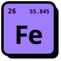
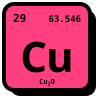
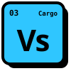

Open-source infrastructure · data in transit
bitsbeam
We build tools that move your data from where it is to where it needs to be.
Every bit beamed.
Nothing dropped on the way.
Why “bitsbeam”?
The UFO never drops the cow.
A flying saucer beams the cow up whole — nothing lost on the way. That's how we treat your data: every bit, beamed from where it is to where it needs to be.
The fleet
Crafts we've launched.
Cosmonats
Background jobs and real-time event streaming for Ruby — one gem, backed by NATS. No Redis. No DB polling. No message silently dropped.
Visit cosmonats →RubyCDP trilogy · Ruby × Chrome DevTools · rubycdp.com ↗

Ferrum
The fearless Ruby Chrome driver
A high-level Ruby API to Chrome over raw CDP — no Selenium, no WebDriver, no ChromeDriver.
Visit ferrum.rubycdp.com →
Cuprite
Headless Chrome driver for Capybara
A pure Ruby Capybara driver built on Ferrum. Pause any spec mid-flight and poke around.
Visit cuprite.rubycdp.com →
Vessel
Fast as Chrome. Dead simple.
A web crawling framework on Ferrum. Describe your Cargo, set sail, haul the data home.
Visit vessel.rubycdp.com →